| n=1 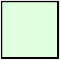 0 | n=2 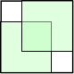 6 – 4√2 .343+ | n=3 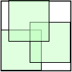 21 – 12 √3 .215+ | n=4 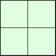 0 | n=5 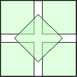 .110+ (M. Morandi) | n=6 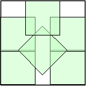 .132+ (M. Morandi) | n=7 .127+ (M. Morandi) |
| n=8 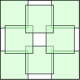 .070+ | n=9 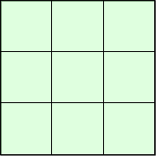 0 | n=10 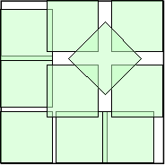 .092+ (Maurizio Morandi) | n=11 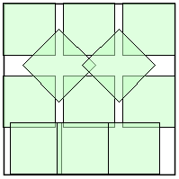 .087+ (Maurizio Morandi) |
| n=12 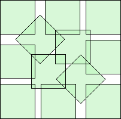 .085+ (Maurizio Morandi) | n=13 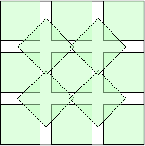 .081+ (Maurizio Morandi) | n=14 .066+ (Maurizio Morandi) | n=15 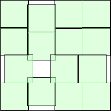 .037+ |
| n=16 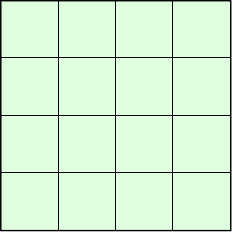 0 | n=17 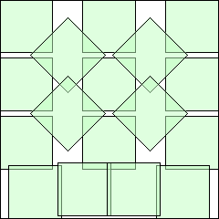 .070+ (Joe DeVincentis) | n=18 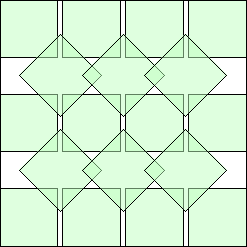 .063+ (Joe DeVincentis) |
| n=19 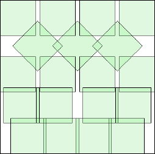 .073+ (Maurizio Morandi) | n=20 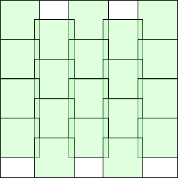 .066+ (Joe DeVincentis) | n=21 .070+ (Maurizio Morandi) |
| n=22 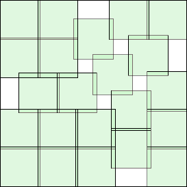 .053+ (Maurizio Morandi) | n=23 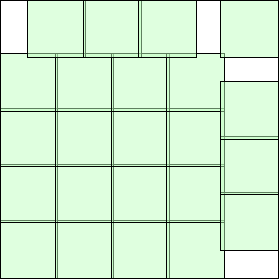 .041+ (Joe DeVincentis) | n=24 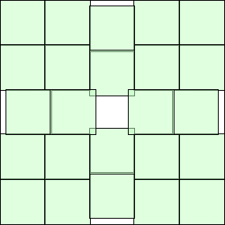 .023+ (Joe DeVincentis) |
| n=25 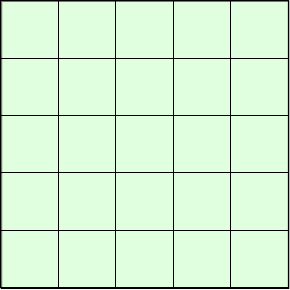 0 | n=26 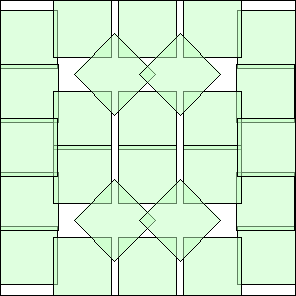 .062+ (Joe DeVincentis) | n=27 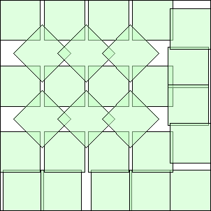 .059+ (Joe DeVincentis) |